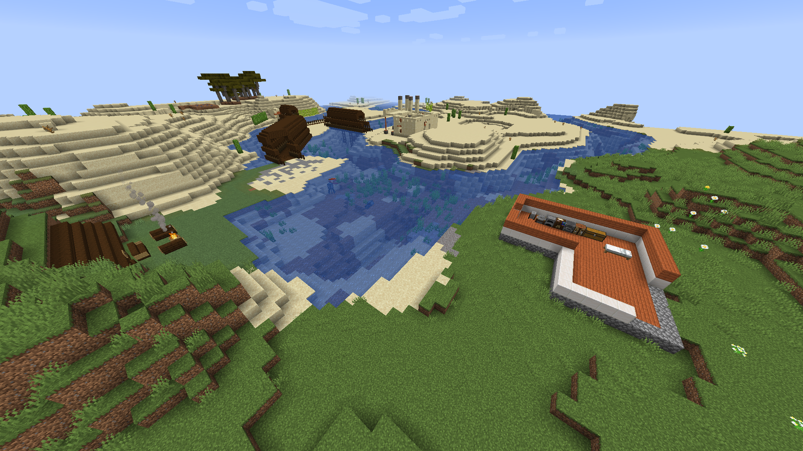

Vila do Kobuchy
Vila do Kobuchy e um dos grupos presentes no servidor,
atualmente o grupo possui 5 membros: Kobuchy, zZanni, zZERIKAYZz (vulgo Edson), Reismer (Guilherme fabrício) e Mateuzu (amigo do fabrício).
Cada integrante possui sua própria moradia, zZanni está construindo um Hotel para futuros novos membros do clã.